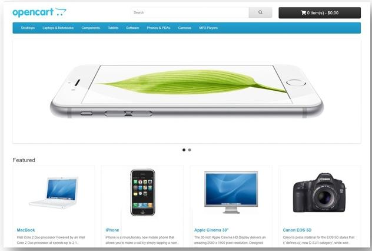
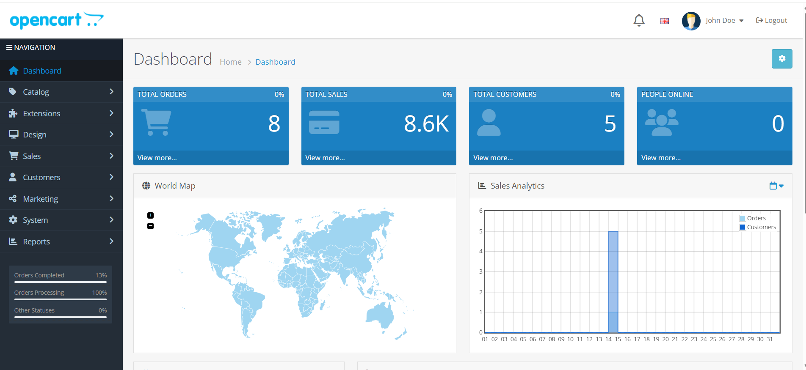
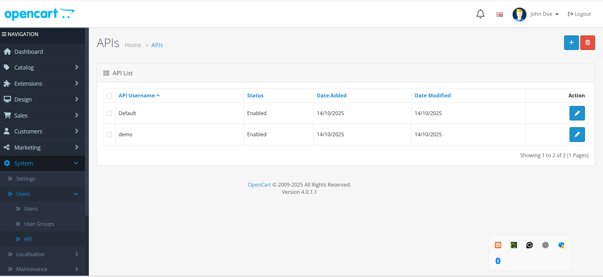
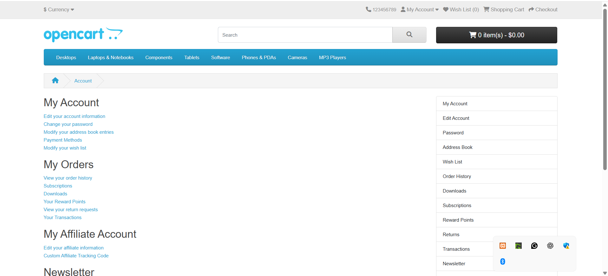

QA Engineer
I test web applications end to end across UI, API, and performance.
I focus on real user journeys, edge cases, and system limits, and I report results in a way teams can act on.
I am a QA Engineer focused on scenario-driven and risk-based testing.
When documentation is missing, I reconstruct requirements using domain heuristics and validate them through exploratory testing before formalizing tests and automation.
I prioritize clarity, maintainability, and real system behavior over assumptions.
OpenCart - Manual UI Testing

Full manual testing of the OpenCart storefront.
Covered registration, login, cart, and checkout with clear test cases and defect reporting.
- 66 test cases designed and executed
- 3 defects found and documented with evidence
- Traceability and clean reporting
OpenCart - UI Automation Testing
End-to-end UI automation using Python, PyTest, and Selenium.
Built with Page Object Model for maintainability.
- POM structure
- Soft assertions with screenshots
- HTML and Allure reporting
OpenCart - Manual Admin Panel Testing

Manual testing of the OpenCart Admin Panel.
Focused on core admin workflows and day-to-day operations.
- Login and access checks
- Product and category management flows
- Order handling and dashboard checks
OpenCart - Admin Panel Automation Testing
Automated testing framework for the OpenCart Admin Panel using Python, PyTest, and Selenium.
Built with Page Object Model for maintainability.
- POM-based structure
- Soft assertions with screenshots
- HTML and Allure reporting
OpenCart - API Testing (Postman)

API testing using Postman and Newman.
Covered auth, products, cart, and orders with positive and negative scenarios.
- 21 tests executed
- 100% pass rate in the documented run
- Modular environments for local API testing
OpenCart - Performance Testing (JMeter)

Performance testing using Apache JMeter with monitoring and clear SLA checks.
Includes load, spike, soak, and stress scenarios.
- SLA target: 95% under 3 seconds, error rate 1% or lower
- PerfMon monitoring for CPU, memory, disk, and network
- Capacity limits documented during stress
OpenCart - UI Automation Testing (Playwright)
End-to-end UI automation using Playwright Test and TypeScript.
Built with Page Object Model for clean structure and maintainability.
- Playwright Test + TypeScript
- Page Object Model (POM)
- Cross-browser runs (Chromium, Firefox, WebKit)
- UI Manual: 63/66 passed (3 defects logged)
- Admin Panel: 100% pass
- API: 21/21 passed
- Performance: Pass under load; expected limits under stress
Overall, the system is stable for small to medium traffic in this environment.
Known issues are documented and explained in the project reports.